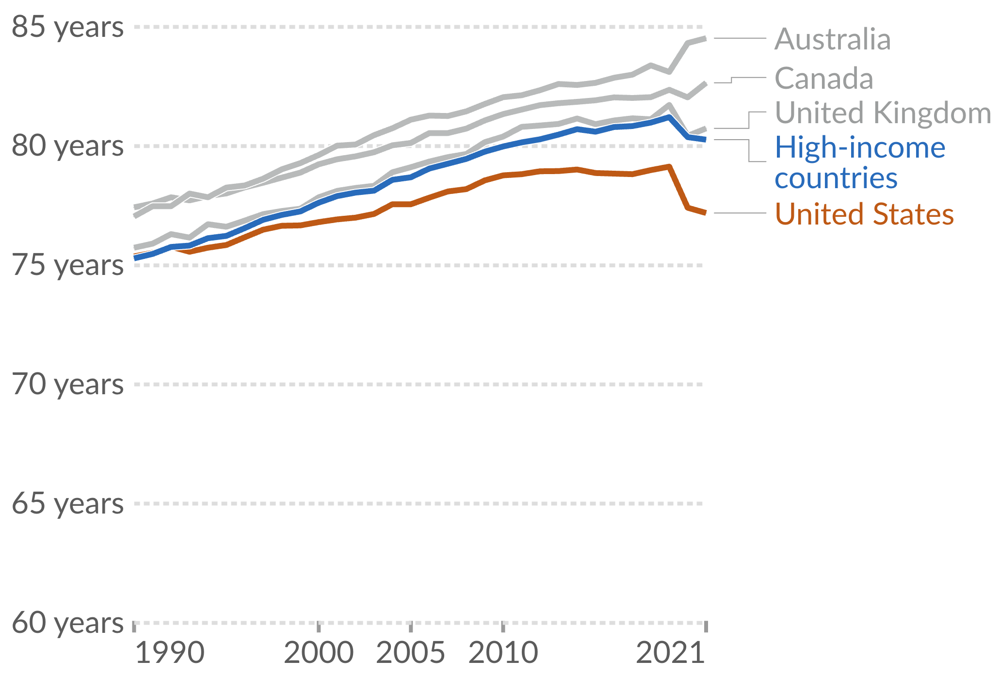

| person_name | person_id | wage | yrs_training |
|---|---|---|---|
| Paul | 1 | 18.50 | 1.00 |
| Ringo | 2 | 19.00 | 3.00 |
| George | 3 | 17.65 | 2.50 |
| John | 4 | 27.95 | 8.20 |
1 Introduction
Key Questions
- What is the difference between correlation and causation?
- What does an econometrics research project entail?
- What are the main types of data formats we will work with?
- What is statistical software and why is it useful?
1.1 What is this Class About?
This class is obviously dedicated to the study of econometrics (endearingly shortened `metrics). But what exactly does econometrics entail? What differentiates it from broader terms such as “statistical analysis” or “data analysis”?
From Wooldridge (2019), we get a classic definition of econometrics:
“…statistical methods for estimating economic relationships, testing economic theories, and evaluating and implementing government and business policy.”
However, my view of econometrics is at the same time, broader and more narrow:
Definition of Econometrics
The practice of using statistical, quantitative methods to study social phenomena and provide insights into public policy. More specifically, modern econometrics has focused on identifying the causal effects of social phenomena/policy as opposed to correlations.
In other words, I view the practice of econometrics as the use of quantitative methods to understand the social world around us, with a special (though not exclusive) lens focusing on separating correlation from causation.
1.2 Does Having Health Insurance Cause You to be Healthier?
Let’s think about a critical question in public policy: does having health insurance make someone healthier? This is especially an important question in the context of the United States, which does not have a public health insurance system. Instead, it is a predominantly private system entangled with a complex net of social safety nets meant to provide a patchwork of coverage to the most marginalized.
However, as of 2023, 9.5% of U.S. adults do not have any health insurance coverage.1 Would the US as a whole be better off guarantee health insurance coverage for everyone? If health insurance makes people healthier, then there may be a strong case to do so. If not, the benefits of such a system would become, at the very least, more opaque.
Let’s take a look at life expectancy in the US (a course but important measure of population health), relative to similar high-income, developed countries. Figure 1.1 shows the average life expectancy from 1990 to 2021 for the US, UK, Canada, Australia, and a number of other high-income countries. As can be seen, the US performs considerably worse in terms of life expectancy, and this divergence between peer countries has gotten larger since the 1990s, and especially during the COVID-19 pandemic.

Source: Our World in Data
Critically—with the exception of the US—all of the countries in the peer group have some form of universal health care. In other words, all developed countries which are healthier than the US have policies which guarantee the uninsured rate is zero.
This then leads to a critical question: did universal health insurance cause these countries to have better health outcomes? Or is this a correlation between policy and outcomes? Certainly, one could make an argument that having health insurance does cause better health outcomes. On the other hand, there are lots of differences between the US and other high-income countries which may also explain the pattern seen in Figure 1.1.
Correlation vs. Causation
The correlation between two variables describes how they move together. It means two things are associated. Causation describes a direct relationship where a change in one variable causes a change in another. It means one thing makes the other happen.
A key part of the content in this course is to think about when our comparisons are describing a correlative relationship or a causal relationship. We will study techniques which—if one is convinced that the requisite assumptions hold—will actually be able to recover causal effect of social phenomena, and bring important insights into essential public policy questions like: what is the effect of health insurance on health outcomes? Does going to college cause you to have higher wages? Do immigrants reduce native wages? and does policing cause decreases in crime?
1.3 Broad Steps of Econometric Analysis
Let’s say we want to know what the effect of on-the-job training has on your wage. What steps would we need to take to answer this question?
1.3.1 Step 1: Write the Model
Our first step would be to write an econometric model, with the goal of using data and econometric tools to estimate the parameters of the model. This model can sometimes be derived from a formal model in economics (i.e., the profit maximization of firms), but it is at least based on some intuitive logic which mathematically relates some variable (the dependent variable) to some independent variable(s).
An example of the type of econometric model you may want to run to study the effect of on-the-job training is:
\[ wage = \beta_0 + \beta_1(training) + \mu, \tag{1.1}\]
where \(wage\) is the outcome, left-hand side (LHS), predicted, or dependent variable (these are synonyms for the same thing), and \(training\) is the explanatory, right-hand side (RHS), predictor, or independent variable (again, synonyms for the same thing). The \(\beta_0\) and \(\beta_1\) variables are the parameters that we want to estimate the value of using econometric methods, and they tell us how our independent variable is related mathematically to our dependent variable.
1.3.2 Step 2: Find the Data
The next thing you have to do—after we figure out the model we want to estimate, such as in Equation 1.1—is to get the data. There is a huge range of datasets out there, and we are especially lucky that the data-gathering infrastructure in the United States is incredibly robust. As we go through the semester, we will work with as many different datasets that we can, which cover a range of topics: from sports to health, crime, and economic development. While different datasets usually can their own quirks, broadly speaking there are three different types of data we will work with in this class:
Cross-sectional data: This is data which contains information on units (e.g., individuals, countries, firms, households, etc.) at a single point in time. This data is the most common, and also is generally the simplest to work with, so we will start out by working mostly with cross-sectional data.
Time-series data: This data consists of observations on a single unit (e.g., a country’s Gross Domestic Product (GDP), a specific company’s stock price, or the national unemployment rate) across multiple time periods (e.g., years, quarters, months, or even minutes). In time series data, a crucial characteristic is the temporal ordering of the observations. This structure is often used for forecasting and modeling how a variable’s past values influence its present and future values.
Panel (or Longitudinal) data: Panel data combines both cross-sectional and time-series dimensions. It consists of observations on multiple units (e.g., individuals, firms, or countries) over multiple time periods. It essentially tracks the same set of cross-sectional units over time. This gives it more information, more variability, and allows researchers to use a rich set of methods to really hone in on the causal effects of whatever social phenomena being studied.
In all of these cases, econometric data is organized in what is called a matrix or a dataframe. It should look roughly similar to an Excel Spreadsheet, where each column represents a different variable (which is usually labelled, sometimes not), and each row represents the values that a specific unit has across these variables.
For example, the data we use to estimate the model in Equation 1.1 may look like:
where the person_name column is (obviously) each person’s name, person_id column corresponds the unique numerical identifier associated with each person (this will be more common to see in datasets since names are usually anonymous), the wage column shows each person’s hourly wage in dollars, and the yrs_training column shows the number of years each person received on-the-job training. This row-column structure of organizing data is so common that the word column is often interchanged with the word variable.
1.3.3 Step 3: Estimate the Model
Once we have a model in mind as well as the appropriate data, we can then use our econometric methods to estimate the relationship. The bulk of this class is dedicated to this step in the econometric research process, but the other stages are no less important! The most common way that econometric models are estimated is with Ordinary Least Squares (OLS), which you may remember from your pre-req. In addition to estimating the actually value of the parameters in the model, we also want some idea of how uncertain we are about the estimated parameter value. This is where notions of statistical significance and confidence intervals come in.
1.3.4 Step 4: Interpret the Estimate
Once we have an estimated number for the parameter in our model, we then have to interpret the number. Here, the phrase “interpret the estimate” means two parallel things. First, there is the literal, mathematical interpretation of the model. This will change depending on the functional form we use to estimate the model, and we will spend lots of time learning about this. The second part of “interpreting” the model is about what the results mean in the context of your broader research question. Is your estimate big or small? Is it economically important? Do you actually think it reflects a causal effect? These are all types of interpretation which are a critical part of econometrics research, but for which there is not usually a formula we can use. A large part of the “art” working on an econometrics project is exactly this type of interpretation, and how you form it into a compelling narrative. While there are some tools we will cover which will help in this regard, in my opinion, nothing will help you more with this than just reading lots of good, well-written econometrics papers.
1.4 Statistical Software
Much of the econometric process is done using specialized statistical software. We will use this software to: “clean” our data and organize in the appropriate row-column format to do our econometric estimations; explore our data using descriptive statistics (means, medians, etc.) and visualizations (an increasingly important part of a compelling econometric project); estimate our model and conduct analyses of statistical uncertainty; and output our results to easy-to-interpret tables and figures.
There are a few commonly used econometrics software:
- Stata: Proprietary software purpose-built for econometrics
- R: Open-source programming language with a focus on statistical analysis
- Python: Open-source programming language with a focus on data science more broadly
- EViews: Proprietary software with a focus on forecasting and other time series applications
Each one of these software of their own pros and cons, and it is worth knowing several quite well. For the purposes of this class, we will learn the R programming language to do econometrics. If you haven’t take the time to review appendix R to learn more about R, how to install it, and to run your first chunk of code!
1.5 Summary and Conclusion
This chapter introduced the fundamental framework that will guide our study of econometrics throughout this course. We defined econometrics as the use of quantitative methods to understand social phenomena and inform public policy, with a particular focus on distinguishing between correlation and causation. Through the example of health insurance and health outcomes, we saw how patterns in data can be misleading. While the United States lags behind peer countries in life expectancy, and those peer countries all have universal health insurance, we cannot immediately conclude that universal coverage causes better health outcomes. The tools you will learn in this course are designed to help you identify causal relationships rather than mere associations.
1.5.1 Key Takeaways:
Econometrics vs. correlation: Modern econometrics focuses on identifying causal effects, not just correlations between variables
Four steps of econometric research:
- Write an econometric model
- Find appropriate data
- Estimate the model parameters
- Interpret the results
Three main data types: Cross-sectional (single point in time), time-series (one unit over time), and panel data (multiple units over time)
Statistical software: We will use R to clean data, estimate models, and present results
As we move forward, remember that econometrics is as much an art as it is a science. The mathematical tools we will learn are powerful, but they are only as good as the questions we ask, the data we can find, and the thoughtfulness with which we interpret our results.